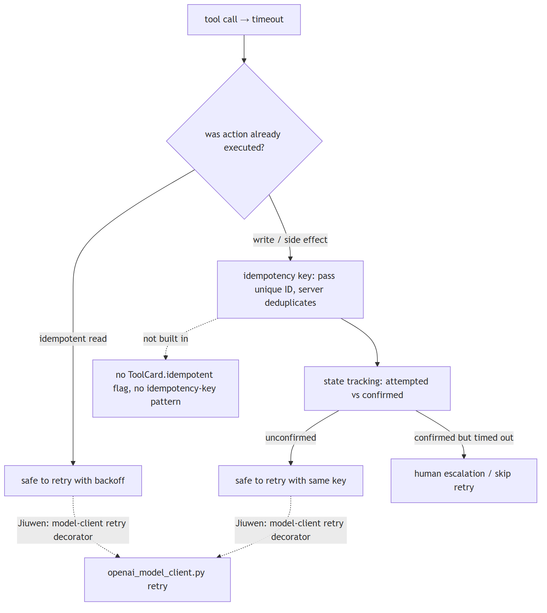
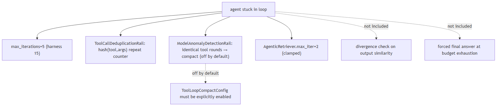
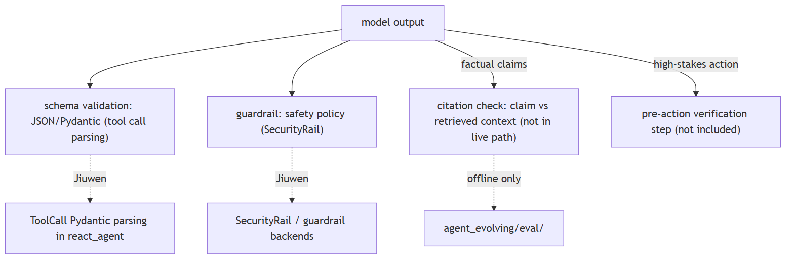
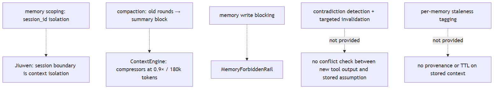
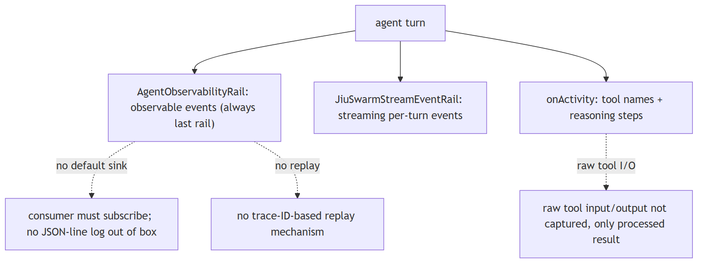
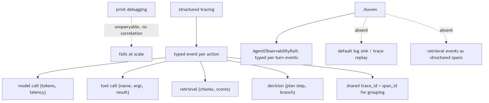
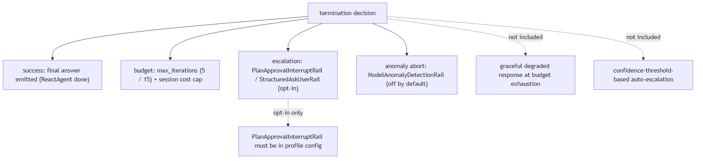

Agent failure modes
1. Tool call failures and idempotency
Mechanism intermediate
TL;DR. "What happens if a tool times out after the action already executed?" Retrying blindly on a non-idempotent call — a payment, a database write, an email send — can cause duplicate side effects.
Key points.
- Separate the call type — reads are idempotent and safe to retry with backoff; writes must track whether they were confirmed or merely attempted.
- Idempotency keys (a unique request ID passed with every write; the server deduplicates) are the standard fix.
- State must persist across retries: the agent needs to know that
payment_id=abc123was attempted before deciding to retry, not just that the last call failed. - Add a human-escalation path for any irreversible action.
Concept. A tool call can time out after its action has already executed. Reads are idempotent and safe to retry with backoff; writes must track whether they were confirmed or only attempted. The standard fix is an idempotency key — a unique request ID passed with every write, which the server uses to deduplicate. State must persist across retries so the agent knows that payment_id=abc123 was attempted, not merely that the last call failed. Any irreversible action needs a human-escalation path.

In Jiuwen. Jiuwen retries at the model-client layer and deduplicates repeated (tool, args) calls. It has no idempotency-key pattern and no attempted-vs-confirmed tracking, so keeping writes safe across retries is left to the developer.
Under the hood
Implementation
Retry logic lives in the model-client layer (a per-provider retry decorator in openai_model_client.py). Tool calls are deduplicated at the argument level by ToolCallDeduplicationRail, which detects repeated (tool, args) hashes and warns or compacts. Idempotency keys, attempted-vs-confirmed state tracking, and a read/write tool taxonomy are not built in; ToolCard has no idempotent field, so retry safety is a design decision the developer encodes.
Code anchors
| Code anchor | What it points to |
|---|---|
agent-core/openjiuwen/core/foundation/llm/model_clients/openai_model_client.py |
per-provider retry decorator on API errors |
jiuwenswarm/jiuwenswarm/agents/harness/common/rails/tool_dedup_rail.py:157 |
ToolCallDeduplicationRail: repeated (tool, args) → warn/compact |
agent-core/openjiuwen/core/foundation/tool/base.py |
ToolCard schema; no idempotent field |
agent-core/openjiuwen/core/single_agent/agents/react_agent.py |
tool execution path; no confirmed-vs-attempted state |
2. Stuck loops and loop invariants
Mechanism advanced
TL;DR. Agents rarely crash visibly.
Key points.
- Hard step cap (
max_iterations). - Divergence detection: if the last N tool calls are identical or the model output is structurally the same, abort rather than continue.
- State deduplication: canonicalise
(tool, input_hash)and reject re-execution of a confirmed call. - Context compaction on loop: if the agent is stuck, the context likely contains noise that is reinforcing the wrong path — compact it before continuing.
- A final-answer forced output at budget exhaustion.
Concept. Agents rarely crash visibly — they loop. A wrong conclusion is written back into context and reinforces itself; a bad tool call is retried unchanged. The mechanisms that prevent this are: a hard step cap (max_iterations); divergence detection that aborts when the last N tool calls or the output are structurally identical; state deduplication that canonicalises (tool, input_hash) and rejects re-execution of a confirmed call; context compaction to clear the noise that is reinforcing the wrong path; and a forced final answer at budget exhaustion.

In Jiuwen. Jiuwen caps the loop and detects repeated tool rounds. The compaction guard that would break a loop is off by default, and there is no check for repeated model output.
Under the hood
Implementation
Concrete mechanisms exist: ReactAgent.max_iterations defaults to 5 (the harness raises it to 15); ModelAnomalyDetectionRail detects consecutive identical tool-call rounds via ToolLoopCompactConfig (off by default; it compacts then aborts); ToolCallDeduplicationRail counts repeated (tool, args); AgenticRetriever.max_iter defaults to 2. Output-similarity divergence checks and a forced final answer at budget are not included, and ToolLoopCompactConfig must be enabled explicitly.
Code anchors
| Code anchor | What it points to |
|---|---|
agent-core/openjiuwen/core/single_agent/agents/react_agent.py:288 |
max_iterations: int = Field(default=5) |
agent-core/openjiuwen/harness/schema/config.py:252 |
harness default iterations 15 |
agent-core/openjiuwen/harness/rails/model_anomaly_detection_rail.py:74 |
ToolLoopCompactConfig (default off); :90 loop → compact → abort |
jiuwenswarm/jiuwenswarm/agents/harness/common/rails/tool_dedup_rail.py:157 |
repeat counter/warning |
agent-core/openjiuwen/core/retrieval/retriever/agentic_retriever.py |
max_iter=2 clamped |
3. Output validation and ungrounded confidence
Mechanism advanced
TL;DR. A fluent answer is not a correct one, so validation is an architectural stage rather than a review step.
Key points.
- For factual claims: extract each claim from the output, verify it against the retrieved source documents (NLI model or LLM-as-judge).
- For structured output: validate against the expected schema before acting (JSON schema, Pydantic model).
- For high-stakes actions: a separate verification step before the result is trusted or acted upon.
- Treat "the model said X" as a hypothesis, not a fact.
Concept. A fluent answer is not a correct one, so validation is an architectural stage rather than a review step. For factual claims, extract each claim and verify it against the retrieved sources (an NLI model or LLM-as-judge). For structured output, validate against the expected schema (JSON Schema, Pydantic) before acting. For high-stakes actions, insert a separate verification step before the result is trusted. Treat "the model said X" as a hypothesis, not a fact.

In Jiuwen. Jiuwen validates tool-call structure and applies guardrails, but it does not check answer claims against retrieved context in the live path; that faithfulness check runs only offline.
Under the hood
Implementation
Structured output validation is present through StructuredAskUserRail and Pydantic parsing of ToolCall responses in the tool-call path; the SecurityRail guardrail layer validates inputs and outputs for safety policy. Claim-level citation verification against retrieved context is not in the live path — the faithfulness evaluator in agent_evolving/eval/ runs offline — and there is no general pre-action verification step; schema-guided generation constrains format but not content accuracy.
Code anchors
| Code anchor | What it points to |
|---|---|
agent-core/openjiuwen/core/single_agent/agents/react_agent.py |
ToolCall Pydantic parsing; schema-validated tool calls |
agent-core/openjiuwen/core/security/guardrail/builtin.py |
SecurityRail content classification |
jiuwenswarm/jiuwenswarm/agents/harness/common/rails/ask_user_rail.py |
structured output rail |
agent-core/openjiuwen/agent_evolving/eval/ |
faithfulness evaluation (offline) |
4. Memory as a source of compounding error
Mechanism advanced
TL;DR. Memory is a liability as well as a feature: a wrong assumption stored early can shape every later decision.
Key points.
- Scope memory by task/session boundary — assumptions from session A should not contaminate session B.
- Invalidation: when a tool returns contradictory evidence, the previous related memory should be flagged or discarded, not silently co-exist.
- Immutability checkpoints: tag memories with the context that generated them; when that context is superseded, the memory is stale.
- Know when to compact the context window rather than accumulate it.
Concept. Memory is a liability as well as a feature: a wrong assumption stored early can quietly shape every later decision. Mitigations: scope memory by task or session so assumptions do not leak across sessions; when a tool returns contradictory evidence, flag or discard the related memory instead of letting both coexist; tag memories with the context that produced them so superseded ones can be identified as stale; and compact the context window rather than accumulate it.

In Jiuwen. Jiuwen keeps memory scoped to a session and compacts long histories. It does not detect contradictions or mark memories as stale.
Under the hood
Implementation
Memory is session-scoped: session_id is the isolation unit and contexts do not cross sessions. The context engine compresses history (compressors at a 0.9× token budget and a full compaction at 180k tokens), and MemoryForbiddenRail blocks specific write patterns. Contradiction detection, per-memory staleness tags, and targeted invalidation are not provided — compaction is all-or-nothing.
Code anchors
| Code anchor | What it points to |
|---|---|
agent-core/openjiuwen/core/context_engine/context_engine.py |
session-scoped context; recover_from_model_exception for overflow |
agent-core/openjiuwen/core/context_engine/processor/compressor/round_level_compressor.py:104 |
trigger_context_ratio=0.9 |
agent-core/openjiuwen/core/context_engine/processor/compressor/full_compact_processor.py |
full compaction at 180k tokens |
jiuwenswarm/jiuwenswarm/agents/harness/common/rails/memory_forbidden_rail.py |
MemoryForbiddenRail |
5. Observability and auditing agent decisions
Mechanism intermediate
TL;DR. If the only artifact is the final transcript, no one can audit why the agent chose one tool or path over another.
Key points.
- Structured trace per turn: the model's reasoning text, which tools were called with what inputs, the raw tool outputs, and the rail/guard decisions that shaped the response.
- Each step should have a timestamp and a session/turn identifier so you can reconstruct the exact execution path.
- Sampling strategy for production (full trace on errors, sampled on success).
- A way to replay a specific trace to reproduce a failure.
Concept. If the only artifact is the final transcript, no one can audit why the agent chose one tool or path over another. Structured tracing records, per turn: the model's reasoning text, which tools were called with what inputs, the raw tool outputs, and the rail/guard decisions that shaped the response, each stamped with a time and a session/turn identifier. Production uses a sampling strategy (full trace on errors, sampled on success) and supports replaying a specific trace to reproduce a failure.

In Jiuwen. Jiuwen emits per-turn observable events and streaming events that a consumer can subscribe to. It ships no default log sink, does not capture raw tool input/output, and has no trace replay.
Under the hood
Implementation
AgentObservabilityRail is always the last rail in the profile and captures per-turn observable events; the harness/observability module structures them, JiuSwarmStreamEventRail emits streaming per-turn events, and tool names and reasoning steps surface as onActivity events. A structured JSON-line sink, capture of raw tool input/output (only the processed result surfaces), and trace-ID-based replay are not included out of the box — events require a subscribing consumer.
Code anchors
| Code anchor | What it points to |
|---|---|
agent-core/openjiuwen/harness/observability/__init__.py |
AgentObservabilityRail; always last in profile |
jiuwenswarm/jiuwenswarm/agents/harness/common/rails/stream_event_rail.py |
JiuSwarmStreamEventRail |
agent-core/openjiuwen/harness/rails/ |
rail pipeline; AgentObservabilityRail appended last |
agent-core/openjiuwen/core/single_agent/agents/react_agent.py |
tool call execution; raw I/O not persisted separately |
6. What does structured agent tracing look like, and why does print-debugging fail at scale?
Mechanism intermediate
TL;DR. Emit typed events (model call, tool call, retrieval, decision) with shared trace/span IDs; print-debugging can't be queried, aggregated, or correlated at scale.
Key points.
- Minimum event: trace_id, span_id, event_type, payload, duration_ms.
- Enables: offline replay, production latency monitoring, attached eval scoring.
- Jiuwen: ObservabilityEvent + AgentObservabilityRail cover model/tool calls; retrieval events are not structured spans.
Concept. Print/log statements produce unstructured text: you can't query "all tool calls in session X", can't aggregate latency by tool, and can't correlate a wrong answer back to which retrieval chunk was in context. Structured tracing means emitting a typed event for every meaningful action — model call started/completed, tool called/returned, retrieval executed, decision made — with a shared trace/span ID so events from the same agent run can be grouped. Each event carries: timestamp, latency, token counts, tool name + arguments, retrieval score, model response. This enables offline debugging (replay a trace), production monitoring (alert on p99 latency), and eval (attach ground truth to a trace for scoring). The minimum viable schema: trace_id, span_id, event_type, payload, duration_ms.

In Jiuwen. AgentObservabilityRail (agent-core/openjiuwen/harness/observability/rail.py:355) emits typed observability events at each turn's major points — model call, tool call, final answer — and is always last in the rail profile. Events are delivered to a subscribing consumer; there is no default log sink. Retrieval events (chunk ids, scores) are not emitted as structured spans — they appear only in tool result text.
Under the hood
Implementation
AgentObservabilityRail (harness/observability/rail.py) emits typed observability events at the major points of each turn — model call, tool call, final answer — and is always the last rail in the profile. Token and cost figures come from the model response's usage metadata. Events are delivered to a subscribing consumer: there is no default log sink, and retrieval details (which chunks, their scores) are not emitted as structured spans — they appear only in tool-result text, so cross-run retrieval analytics need manual instrumentation.
Code anchors
| Code anchor | What it points to |
|---|---|
agent-core/openjiuwen/harness/observability/rail.py:355 |
AgentObservabilityRail (typed events) |
agent-core/openjiuwen/core/single_agent/agents/react_agent.py:1328 |
_emit_context_usage (token/usage emission) |
agent-core/openjiuwen/core/foundation/llm/schema/generation_response.py:9 |
GenerationResponse usage/token counts |
7. Termination conditions
Mechanism advanced
TL;DR. "Stop when done" is not a termination condition; an agent needs explicit success, budget, and escalation paths.
Key points.
- At least three termination paths: (1) success — the agent emits a final answer meeting a defined success condition (e.g., all required fields populated, retrieved context cited); (2) budget exhaustion — hard cap on iterations and tokens, with a graceful degraded response rather than silence; (3) human escalation — when the agent has exhausted its budget or detected irresolvable ambiguity, it hands off explicitly rather than looping or hallucinating.
- Confidence threshold as an optional fourth: if the model's own uncertainty estimate is above a threshold, escalate before acting.
Concept. "Stop when done" is not a termination condition. An agent needs at least three explicit paths: success (a final answer meeting a defined condition, such as required fields populated or context cited); budget exhaustion (a hard cap on iterations and tokens, with a graceful degraded response rather than silence); and human escalation (handing off when budget is exhausted or ambiguity is unresolvable). A confidence threshold can add a fourth: escalate before acting when the model's uncertainty is high.

In Jiuwen. Jiuwen stops on no tool call, on iteration caps, and through optional human-approval rails. It does not return a degraded answer at budget exhaustion or escalate automatically on low confidence.
Under the hood
Implementation
Several termination paths exist: ReactAgent.max_iterations is the hard iteration cap (5, or 15 in the harness); PlanApprovalInterruptRail and StructuredAskUserRail provide human-in-the-loop escalation; ModelAnomalyDetectionRail can abort on anomaly detection; and AgentObservabilityRail logs every turn. A graceful degraded response at budget exhaustion and confidence-threshold auto-escalation are not included, and the approval rails are opt-in per agent config.
Code anchors
| Code anchor | What it points to |
|---|---|
agent-core/openjiuwen/core/single_agent/agents/react_agent.py:288 |
max_iterations: int = Field(default=5) |
agent-core/openjiuwen/harness/schema/config.py:252 |
harness default iterations 15 |
agent-core/openjiuwen/harness/rails/model_anomaly_detection_rail.py:74 |
anomaly abort (off by default) |
jiuwenswarm/jiuwenswarm/server/runtime/usage_cost.py:171 |
session cost cap |
jiuwenswarm/jiuwenswarm/agents/harness/common/rails/ask_user_rail.py |
structured human escalation |
jiuwenswarm/jiuwenswarm/agents/harness/code/rails/code_plan_approval_interrupt_rail.py |
PlanApprovalInterruptRail (opt-in) |